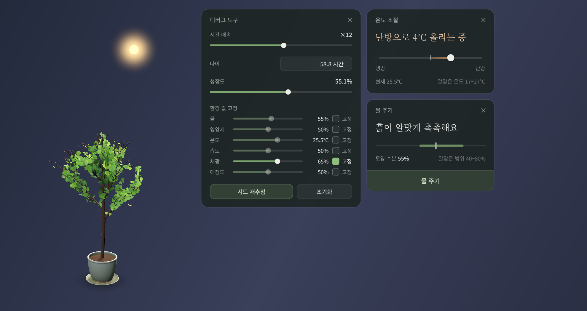
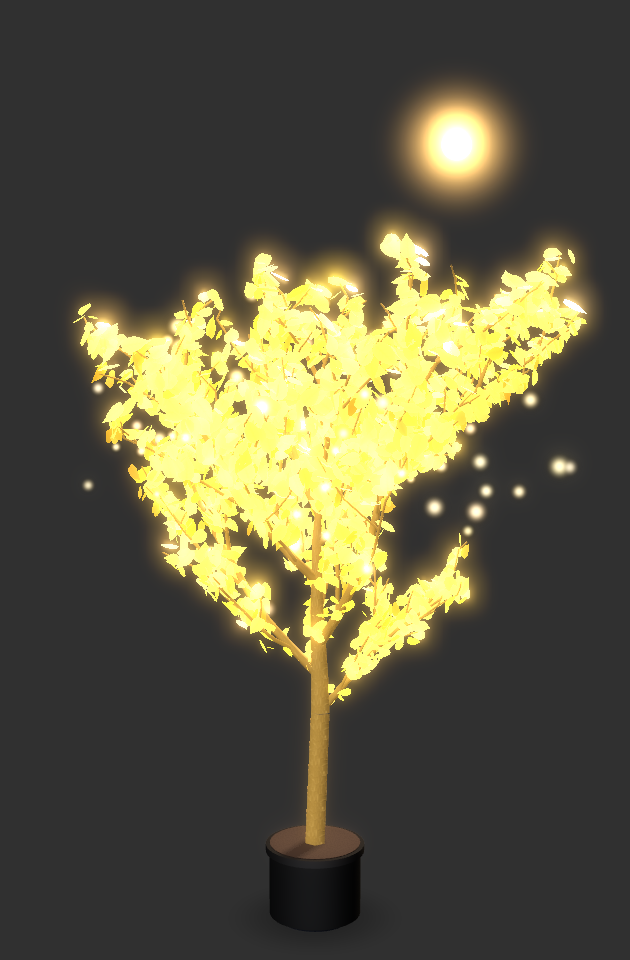
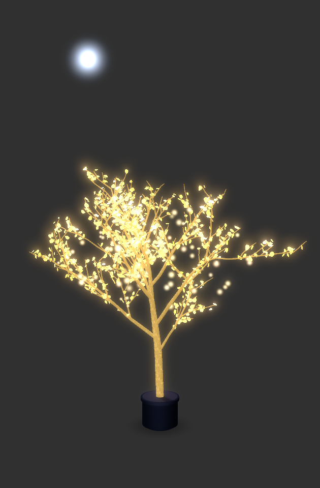
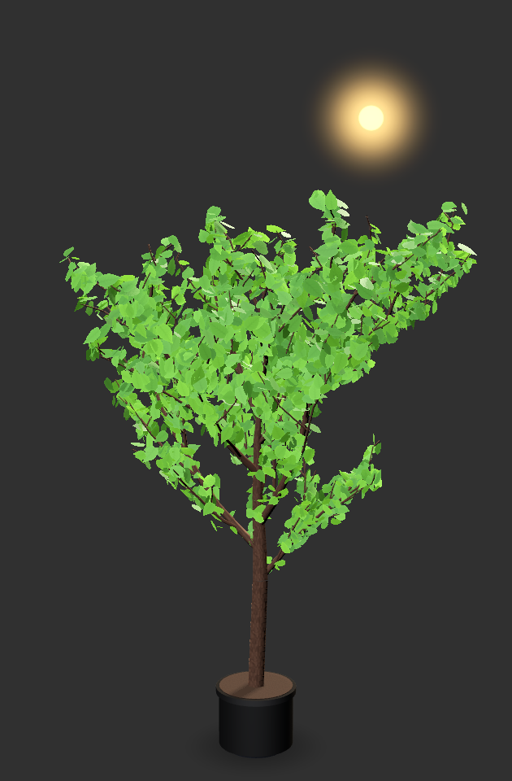
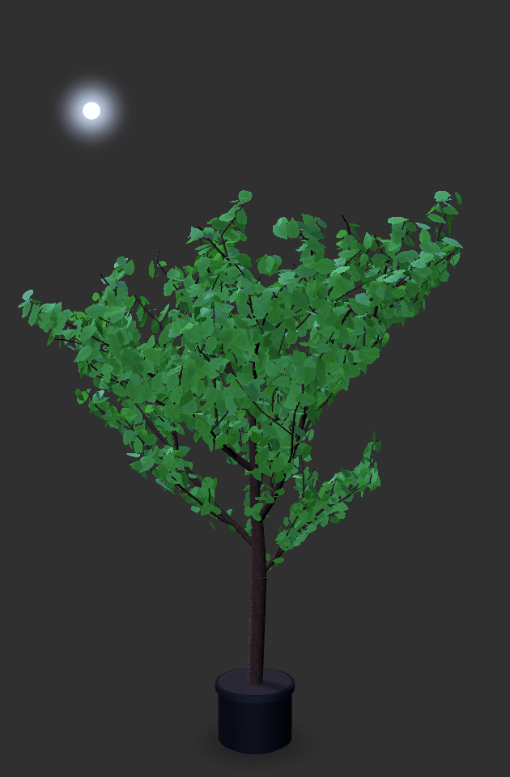
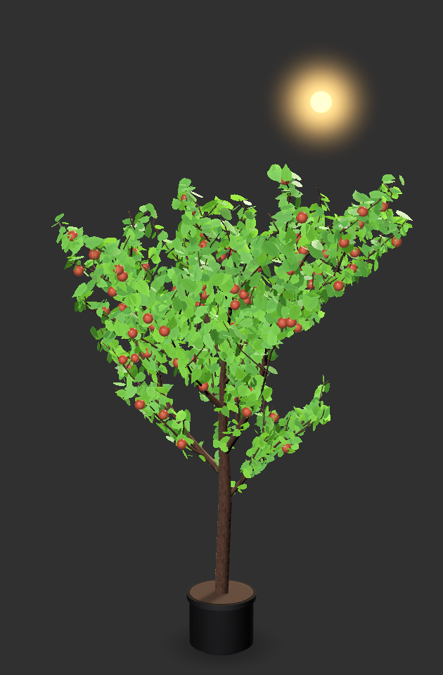
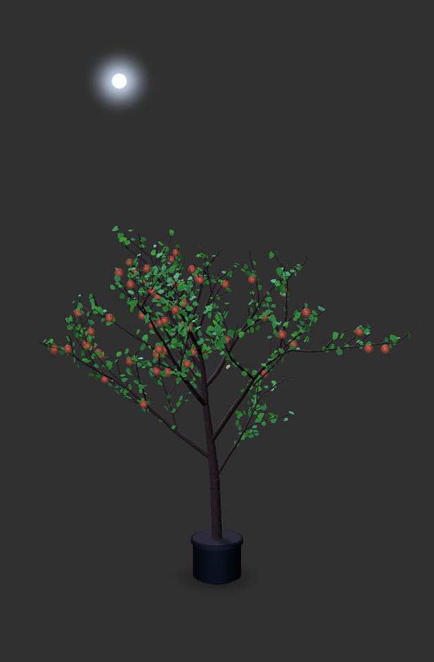

하루 동안 자라는 모습
새벽에 묘목으로 시작한 나무가 해가 하늘을 건너는 동안 자라고, 해가 지면 달빛 아래에서 흔들립니다. 앱의 3D 장면을 프레임마다 그대로 찍어 만든 8초짜리 타임랩스입니다.
실제로는 시간 배속 8에서 하루 안팎이 걸립니다. 바람은 GPU 셰이더가 움직이고, 해와 달은 서울의 실제 태양 위치를 따라갑니다.
도구창은 한 문장으로 말합니다
창을 우클릭하거나 트레이 아이콘을 누르면 물 주기, 영양제, 온도 조절, 스프레이, 설정 창을 열 수 있습니다. 도구창은 맨 위에 식물 상태를 한 문장으로 보여 줍니다.
“흙이 말라 가요”
그 아래에 알맞은 범위가 표시된 게이지와 동작 버튼이 있고, 버튼을 누르면 “물을 줬어요”처럼 짧게 결과를 알려 줍니다. 해와 달은 실제 시각에 맞춰 창 위쪽을 지나가고, 온도와 채광은 사는 도시의 오늘 날씨를 따릅니다. 프로그램이 꺼져 있던 시간은 다시 켤 때 최대 7일까지 이어서 계산합니다.
| 돌봄 | 바뀌는 값 |
|---|---|
| 물 주기 | 흙의 수분 +0.2 |
| 영양제 | 영양 +0.3 |
| 스프레이 | 습도 +0.15 |
| 창에 마우스를 올리거나 클릭 | 애정도 +0.05 |
| 온도 조절 슬라이더 | −10~+10 °C |

세 가지 나무, 낮과 밤
해가 지평선 아래로 내려가면 반대편에서 달이 뜨고, 조명은 따뜻한 햇빛에서 푸른 달빛으로 바뀝니다.


세계수
균열이 빛나는 금빛 껍질, 끝이 밝게 빛나는 호박색 잎, 떠오르는 금빛 입자.


일반 나무
여러 겹의 초록 잎. 활력이 떨어지면 잎이 한 장씩 금빛과 녹슨 빛으로 물들고, 가끔 잎이 떨어집니다.


열매 나무
일반 나무에 감이 열립니다. 애정도가 높을수록 열매가 많아집니다.
스크린샷의 회색 바탕 자리에는 실제로 창 뒤의 바탕화면이 비쳐 보입니다. 화분은 직접 만든 .glb, .gltf 모델로 바꿀 수 있습니다.
돌보는 대로 자랍니다
나무는 줄기에서 큰 가지, 작은 가지, 잔가지로 같은 규칙을 축척만 바꿔 되풀이해 만듭니다. 여섯 환경 값은 이 규칙의 매개변수가 됩니다. 가지마다 쓰는 난수는 시드와 가지 번호로 고정되어 있어서, 값을 바꾸면 새 나무가 생기지 않고 같은 나무가 이어서 모양을 바꿉니다.
| 값 | 무엇이 바뀌나 | 측정한 상관계수 r |
|---|---|---|
| 물 | 모든 가지의 길이와 잎 크기. 0.2 아래로 마르면 가지가 처집니다. | 가지 수 0.98, 잎 수 0.97, 키 0.99 |
| 영양 | 마디마다 나는 곁가지 수 | 가지 수 0.97 |
| 습도 | 잎 수(활력과 함께) | 잎 수 0.96 |
| 채광 | 해 쪽으로 기우는 정도와 자라는 속도 | 기울기 1.00 |
| 애정도 | 열매 수(열매 나무) | 열매 수 1.00 |
| 온도 | 모양이 아니라 자라는 속도. 22 °C에서 가장 빠릅니다. | 잎 수는 역U자 |
한 값만 바꾸고 나머지는 기본값(물 0.6, 영양 0.5, 22 °C, 습도 0.5, 채광 0.6, 애정도 0.5)에 둔 채, 다 자란 나무를 시드 5개로 만들어 평균을 낸 뒤 구한 피어슨 상관계수입니다. 기울기는 해를 동쪽에 두었을 때 가지 끝의 평균 위치를 키로 나눈 값입니다.
-
잎 수는 습도와 활력에 비례합니다
잎 밀도 ρ는 습도 H와 활력 V의 곱입니다. 활력은 여섯 값이 각자의 알맞은 범위에서 얼마나 벗어났는지를 가중 평균한 0~1 점수입니다.
-
곁가지 수는 영양을 따릅니다
한 매듭에 붙는 곁가지 수의 기댓값. po는 가지 순서별 계수, m은 축 끝 보정값, N은 영양입니다.
-
자라는 속도는 22 °C에서 가장 빠른 종 모양입니다
식물의 나이 A가 늘어나는 속도. s는 시간 배속, T는 온도, L은 채광입니다. 온도 항은 12 °C와 32 °C에서 1/e로 떨어지고, 밤에도 채광 항이 0.3으로 남아 낮의 약 40% 속도로 계속 자랍니다.
Qt for Python으로 만든 구조
식물 장면 하나만 Qt Quick 3D(QML)이고, 도구창과 메뉴, 트레이, 설정, 디버그 도구는 모두 Qt Widgets 파이썬 코드입니다. 시뮬레이션과 나무 생성은 Qt 없이 도는 순수 파이썬 계층으로 나눠 따로 테스트합니다.
- 환경 시뮬레이션
sim.py - 가지 골격 생성
tree.py - numpy 정점 배열
mesh.py - PlantGeometry
QQuick3DGeometry - 3D 장면
Scene.qml
1초마다 QTimer가 시뮬레이션을 한 단계 진행합니다. 성장 매개변수가 의미 있게 바뀔 때만 골격을 다시 만들고, 나이만 바뀌면 정점의 길이와 굵기만 다시 계산합니다.
- 투명 오버레이 창
QQuickViewFramelessWindowHintWindowStaysOnTopHintWindowTransparentForInput - 창을 만들기 전에
QQuickWindow.setDefaultAlphaBuffer(True)로 알파 채널을 받고, 창과 3D 배경을 모두 투명하게 해 바탕화면이 비치게 했습니다. 테두리 없이 항상 위에 뜨며, 클릭 통과 모드는 실행 중에setFlag로 켜고 끕니다. - 파이썬과 QML을 잇는 브리지
QObjectPropertysetContextProperty Bridge(QObject)가 해의 고도와 방위각, 테마 색, 활력, 바람 세기 등 18개 값을Property로 내보냅니다. 값이 바뀔 때만 변경 시그널을 보내고, QML은 이 속성에 바인딩되어 저절로 다시 그립니다. 데이터는 파이썬에서 QML로 한 방향으로만 흐릅니다.- 절차적 메시
QQuick3DGeometrysetVertexData - 가지, 잎, 열매를
QQuick3DGeometry를 상속한PlantGeometry로 그립니다. 정점 하나는 40바이트이고, 잎 수천 장을 메시 하나로 합쳐 드로우콜을 줄였습니다. 다 자란 나무(정점 약 4.4만 개)의 배열 계산은 약 7 ms, GPU 업로드는 약 4 ms입니다. - 셰이더와 입자
CustomMaterialExtendedSceneEnvironmentParticleSystem3D - 직접 쓴 GLSL 셰이더 7개로 바람 흔들림, 잎의 역광 투과, 세계수의 균열 발광, 감 열매, 해와 달 원반을 그립니다. 바람은 정점 셰이더에서 계산해 파이썬은 프레임마다 아무 일도 하지 않습니다. 입자는 세계수의 금빛 입자와 일반 나무의 떨어지는 잎입니다.
- Qt Widgets 도구창
QPainterWA_TranslucentBackgroundQPropertyAnimation paintEvent에서QPainter로 반투명 유리 카드GlassPanel을 직접 그리고, 범위가 함께 보이는 게이지와 세그먼트 선택기도 커스텀 위젯으로 만들었습니다. 도구창은action(str, float)시그널만 보내고, 상태는 컨트롤러가 받아서 바꿉니다.- 타이머와 스레드
QTimerQThreadPoolQRunnable - 1초 주기 타이머가 시뮬레이션과 게이지를 갱신하고, 50 ms 단발 타이머는 슬라이더를 연달아 움직여도 골격 재생성을 한 번으로 모읍니다. 날씨와 도시 검색 요청은 별도 스레드에서 처리하고 결과는 시그널로 메인 스레드에 돌려줍니다.
- 시스템 통합
QSystemTrayIconQShortcutQStandardPaths - 트레이에 상주하며, 클릭 통과 중에는 트레이 메뉴가 유일한 조작 수단입니다. Ctrl+Shift+D로 숨은 디버그 도구를 열고, 상태는
%APPDATA%\Fernal\state.json에 저장합니다.
바인딩은 Qt 공식 바인딩인 PySide6(LGPL)를 썼습니다. PyQt6와 API가 거의 같아서 Signal, Property를 pyqtSignal, pyqtProperty로 바꿔 읽으면 구조가 그대로 통합니다.
측정한 결과
| 자동 테스트 | 111건 모두 통과. 위젯 테스트는 QTest.mouseClick으로 실제 클릭을 흉내 내고, 앱 테스트는 실제 QQuickView를 만들어 검사합니다. |
|---|---|
| CPU | 코어 1개의 약 10%(세계수 테마 12~13%) |
| GPU | 약 9%(8~10%) |
| 메모리 | 약 200MB, 72초 동안 늘지 않음 |
| 다 자라기까지 | 첫 실행부터 낮 기준 약 10시간 |
| 코드 | 앱 파이썬 3,629줄, QML 631줄, 셰이더 229줄, 테스트 1,451줄 |
앞으로 할 일
- 성장 35~50% 구간에서 가지 끝의 약 40~50%가 잎 없이 드러납니다. 잎이 더 일찍 돋게 해 이 비율을 10% 아래로 낮춥니다.
- Qt 기본 렌더 스레드를 되살리고, 창이 가려졌을 때 프레임 수를 낮춰 노트북 전력을 아낍니다.
- 실제 날짜에 따른 단풍과 낙엽, 광합성에 따른 탄소 분배 같은 생물학적 모델을 더합니다.
- 설치 파일 코드 서명, 자동 업데이트, macOS와 Linux 지원.